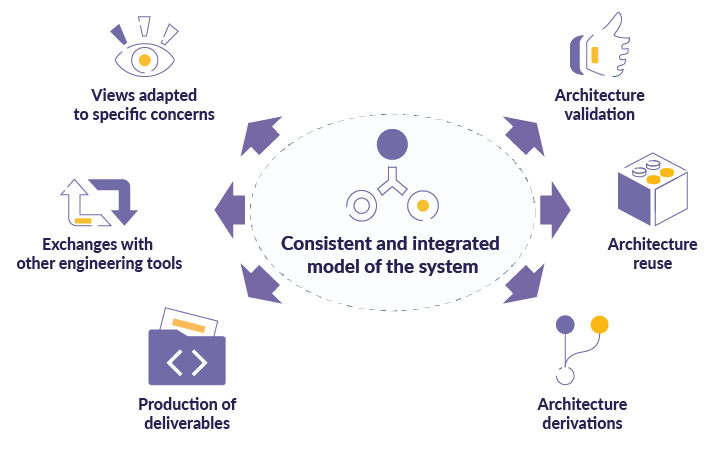

Across all industry domains (energy, aerospace, transportation, healthcare), customers are demanding new products that are more and more complex and interconnected. These new products must be intelligent, safer, eco-friendly, connected, and remain affordable.
It implies to design and assemble numerous components and sub-components assigned to many experts, in a variety of domains (software, mechanical, electrical, electronics, etc). All these components must fit together properly and collectively realize the expected product’s functions, and finally meet the customer’s requirements.
But, in a classical document-driven approach the system is described by a stack of heterogeneous documents, mainly based on office-based formats. This poses the problem of maintaining the consistency of the whole product definition.
To cope with this issue the architects of a product have to move from a document-driven approach to a coherent, integrated and computational description of the whole system.
A Model-Based Systems Engineering (MBSE) approach consists in using a formal digital language to specify, design, analyze and verify a systems. It enables the implementation of workbenches providing modeling services such as edition, visualization, transformation, comparison, storage, etc.

It allows systems architects to work on a system across the whole spectrum from a business needs perspective, to the physical implementation, including the logical decomposition of the system.
Having both a functional view of the system as well as traceability right up to the physical components ensures the integrity of the system’s description and the full traceability throughout the systems engineering process. This reduces inconsistencies and facilitates assembly by allowing early identification of any incompatibilities between components.
A MBSE approach can also be associated to a graphical notation, so that the system is visually described by multiple consistent views. Synchronized with the model these views ensure the consistency of the whole system’s description.
The model being digital, it is possible to automate many engineering activities:
This digital thread allows systems engineers to explore more alternatives faster, address a broad range of multi-disciplinary concerns in a consistent way, and successfully achieve the correct objectives.
Implementing Arcadia, a field-proven methodology, Capella is a MBSE tool supporting these concepts.